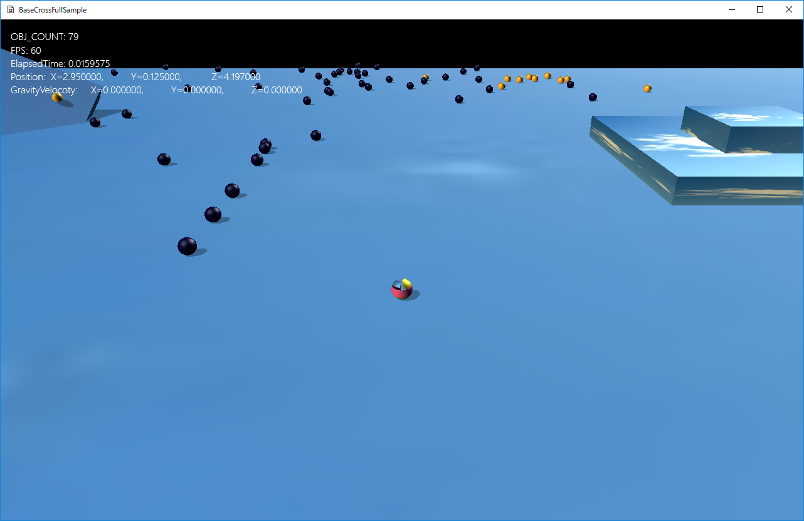
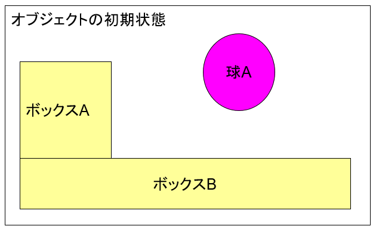
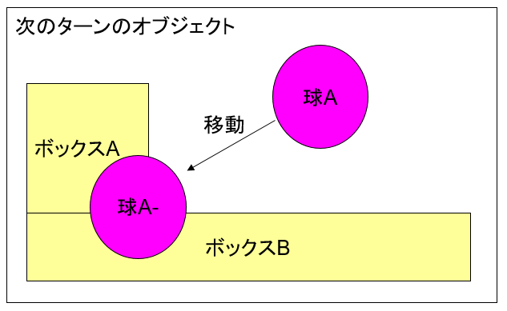
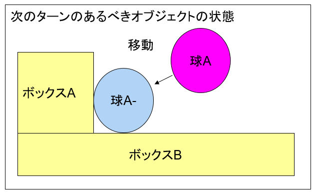
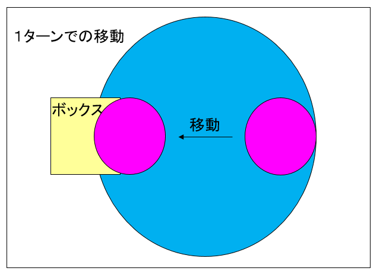
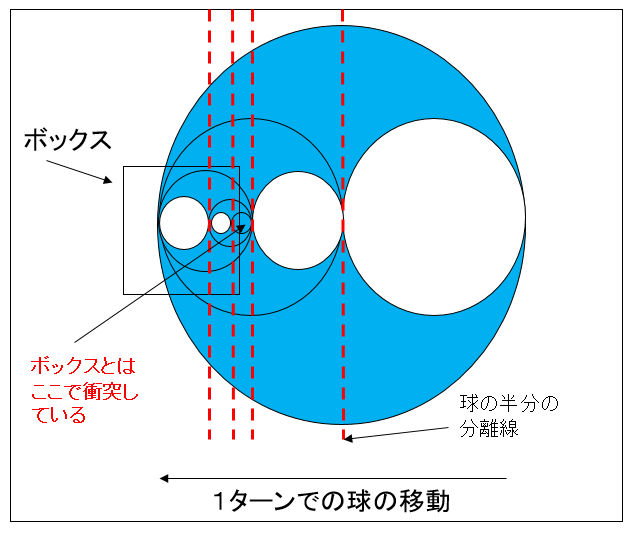
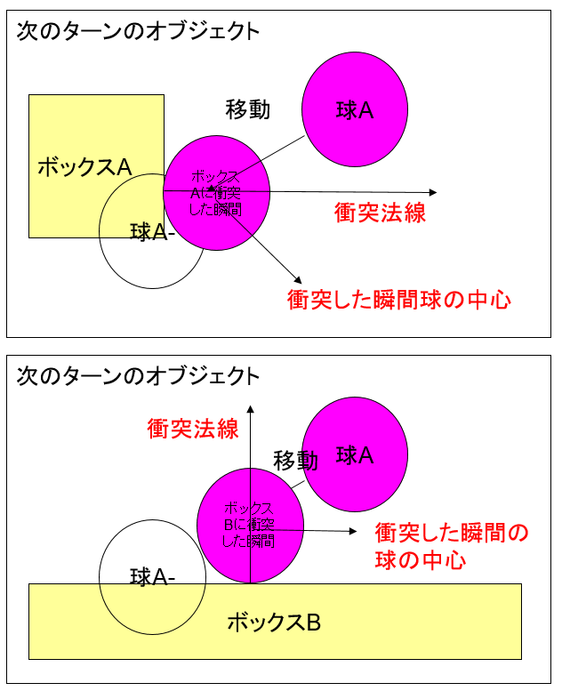
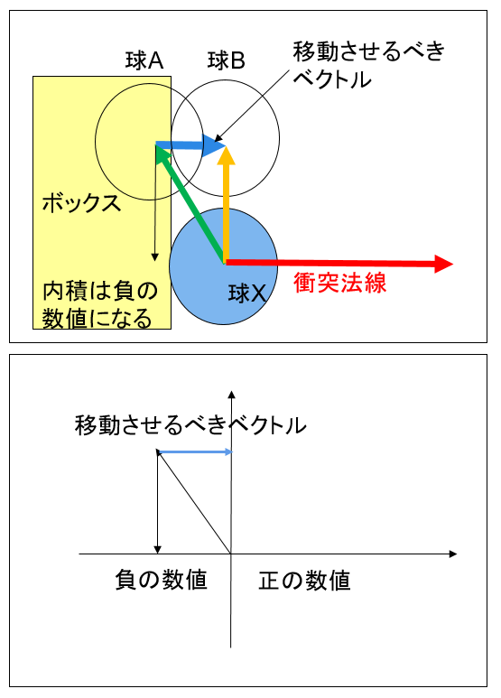

図1206a
この画面でAボタンを押すといつものようにジャンプします。

図1206b
この状態から、以下の状態になります。横移動と、重力が実装されているとします。次のターンというのはBaseCross64の場合、約６０分の１秒後です。

図1206c
次のターンの状態では、球体は二つのボックスと衝突しています。しかしオブジェクトに埋まってしまってますので、以下のように修正しなければいけません。

図1206d
埋まっている状態から、埋まっていない状態に持っていくことを拘束を解くといいます。

図1206e
この場合、大きな球とボックスは衝突しています。

図1206f
そして、今回の例の場合、以下の２つの状態（衝突した瞬間）が存在する形となります。

図1206g
衝突した瞬間を導き出す低レベルの関数は、ライブラリ中DxLibにあるTransHelper.hに記述があります。
void CollisionSphere::CollisionTest(const shared_ptr<CollisionObb>& DestColl) {
if (!HitTest::AABB_AABB(GetSphere().GetWrappedAABB(), DestColl->GetObb().GetWrappedAABB())) {
//現在のAABB同士が衝突してないなら、1つ前に衝突していても衝突無し
return;
}
auto PtrTransform = GetGameObject()->GetComponent<Transform>();
auto PtrDestTransform = DestColl->GetGameObject()->GetComponent<Transform>();
bsm::Vec3 SrcVelocity = PtrTransform->GetVelocity();
bsm::Vec3 DestVelocity = PtrDestTransform->GetVelocity();
//前回のターンからの時間
float ElapsedTime = App::GetApp()->GetElapsedTime();
//移動以外変化なし
SPHERE SrcSphere = GetSphere();
SPHERE SrcBeforSphere = GetBeforeSphere();
//相手
OBB DestObb = DestColl->GetObb();
OBB DestBeforeObb = DestColl->GetBeforeObb();
bsm::Vec3 SpanVelocity = SrcVelocity - DestVelocity;
float HitTime = 0;
if (HitTest::CollisionTestSphereObb(SrcBeforSphere, SpanVelocity, DestBeforeObb, 0, ElapsedTime, HitTime)) {
CollisionPair pair;
pair.m_Src = GetThis<Collision>();
pair.m_Dest = DestColl;
SPHERE SrcChkSphere = SrcBeforSphere;
SrcChkSphere.m_Center += SrcVelocity * HitTime;
pair.m_SrcCalcHitCenter = SrcChkSphere.m_Center;
OBB DestChkObb = DestBeforeObb;
DestChkObb.m_Center += DestVelocity * HitTime;
pair.m_DestCalcHitCenter = DestChkObb.m_Center;
bsm::Vec3 ret;
HitTest::SPHERE_OBB(SrcChkSphere, DestChkObb, ret);
//衝突した瞬間で法線を計算
pair.m_SrcHitNormal = SrcChkSphere.m_Center - ret;
pair.m_SrcHitNormal.normalize();
pair.m_CalcHitPoint = ret;
GetCollisionManager()->InsertNewPair(pair);
}
}

図1206h
球Xが衝突した瞬間です。球Aは埋まってる状態、球Bが拘束を解消する位置です。下のグラフが単純化したものです。
１、球Aの中心から球Xの中心を引いてベクトルを作り出す。 ２、それと衝突法線の内積をとる ３、それがマイナスだったら、その距離のぶんだけ、衝突法線方向に球Aを移動させる。
void CollisionManager::EscapeCollisionPair(CollisionPair& Pair) {
auto ShSrc = Pair.m_Src.lock();
auto ShDest = Pair.m_Dest.lock();
if (ShSrc->GetAfterCollision() == AfterCollision::None || ShDest->GetAfterCollision() == AfterCollision::None) {
return;
}
bsm::Vec3 SrcCenter = ShSrc->GetCenterPosition();
bsm::Vec3 DestCenter = ShDest->GetCenterPosition();
bsm::Vec3 SrcLocalVec = SrcCenter - Pair.m_SrcCalcHitCenter;
float SrcV = bsm::dot(SrcLocalVec, Pair.m_SrcHitNormal);
if (SrcV < 0.0f) {
//まだ衝突していたら
float EscapeLen = abs(SrcV);
if (!ShDest->IsFixed()) {
EscapeLen *= 0.5f;
}
//Srcのエスケープ
SrcCenter += Pair.m_SrcHitNormal * EscapeLen;
if (!ShDest->IsFixed()) {
//Destのエスケープ
DestCenter += -Pair.m_SrcHitNormal * EscapeLen;
}
SrcCenter.floor(GetEscapeFloor());
auto PtrSrcTransform = ShSrc->GetGameObject()->GetComponent<Transform>();
//Srcのエスケープ
PtrSrcTransform->SetWorldPosition(SrcCenter);
if (!ShDest->IsFixed()) {
DestCenter.floor(GetEscapeFloor());
auto PtrDestTransform = ShDest->GetGameObject()->GetComponent<Transform>();
//Destのエスケープ
PtrDestTransform->SetWorldPosition(DestCenter);
}
}
}